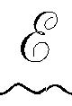
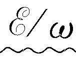
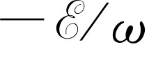

本章将讨论这样一些现象，这些现象与描写光的电场是矢量这一事实有关。前几章中，我们除了注意到电矢量位于与传播方向垂直的平面内以外，并没有考虑到电场振动的方向。在那里，电矢量在该平面内的特定方向对我们关系不大。现在我们要讨论的则是以电场振动的特殊方向性为其主要特征的一些现象。
对理想的单色光，电场必须以确定的频率振动，但因x 分量与y 分量可按确定的频率相互独立地振动，所以应首先讨论两个相互成直角的独立振动的叠加产生的合成效应。以相同频率振动的x 分量和y 分量合成后会得到怎样的电场？如果在x 振动上加上一定大小的同相位的y 振动，结果就得到一个在xy 平面内沿新方向的直线振动。图33-1表示不同振幅的x 振动与y 振动的叠加结果。但图33-1所示的合成结果并不包括各种可能情形；在图中所示的所有情况中，我们都假定x 振动和y 振动是同相的 ，但不一定要那样。x 振动与y 振动可以是不同相的。
图33-1 同相位的x振动与y振动的合成
当x 振动与y 振动不同相时，电场矢量沿一椭圆运动；我们可以用一种大家熟悉的方法来说明这一点。如果我们从支点用一根长线悬挂一个球，使它可在水平面内自由摆动，它将作正弦振动。若设想有一水平的xy 坐标，原点取在球的静止位置上，球就既可在x 方向，也可在y 方向以相同的单摆频率摆动。选取适当的初位移和初速度，我们可使球或沿x 轴振动，或沿y 轴振动，或沿xy 平面内的任一直线振动。球的这些运动与图33-1中所示的电场振动是类似的。在图上各种情况中，因为x 振动与y 振动都同时达到最大值与最小值，所以x 振动与y 振动是同相位的。但是我们知道，球的最一般的运动是沿椭圆的运动，它对应于x 方向与y 方向不 同相的振动。图33-2画出了x 振动与y 振动不同相时的叠加，其中各图形所对应的x 振动和y 振动间的相位差角是不同的。一般的结果是电矢量沿一椭圆运动，沿直线运动相当于相位差为零（或π 的整数倍）的特殊情况；沿圆运动则相当于等振幅而有90°相位差（或π /2的奇数倍）的情况。
图33-2 等振幅而相对相位不同的x 振动与y 振动的叠加。E x 与E y 两个分量用实数与复数两种符号表示
在图33-2中，我们把x 方向与y 方向的电场矢量标为复数，用这种形式表示相位差很方便。不要把用这种符号表示的复数电矢量的实部与虚部和场的x 坐标与y 坐标混淆起来。图33-1与图33-2中的x 坐标与y 坐标是可以测量的实际电场，而复数电场矢量的实部与虚部则仅仅是一种方便的数学形式，并无物理意义。
现在讲一些术语。电场沿直线振动的光叫做线偏振光 （有时称为平面偏振光）；图33-1即表示线偏振光。电场矢量的末端沿一椭圆移动的光叫做椭圆偏振光 。当电场矢量末端沿一圆移动时，则为圆偏振光 。当我们朝着迎面来的光观看时，若电矢量末端沿逆时针方向旋转，我们称它为右旋圆偏振光。图33-2（g）表示右旋圆偏振光，而图33-2（c）则表示左旋圆偏振光。在两种情况中光都从纸面向外。我们标记左旋圆偏振与右旋圆偏振的约定与今天对物理学中所有其他显示偏振性的粒子（例如电子）所用的约定是一致的。然而，在某些光学书中却用相反的约定，所以读者必须小心。
我们考虑了线偏振光、圆偏振光和椭圆偏振光，除这些光以外，剩下的只有非偏振光 了。但是，既然光总得沿这些椭圆之一振动，它怎么可能是非偏振的呢？如果光不是绝对单色的，或者如果x 相与y 相不完全保持同步，那么电矢量先沿某个方向振动，然后沿另一个方向振动，偏振性经常在改变。记住一个原子的发射只持续10-8 s时间，若一个原子发射某种偏振光，接着另一个原子发射另一种偏振光，则偏振性将每隔10-8 s改变一次。如果偏振性改变得比我们所能探测的更快，则我们称光为非偏振的，因为所有的偏振效应都平均掉了。没有一个偏振光的干涉效应可以用非偏振光显示出来。但是，从定义来看，只有当我们无法断定光是否偏振的时候，才称它为非偏振光。
我们已讨论过的偏振效应的第一个例子是光的散射。设有一束光（例如来自太阳的光束）照射在空气上。电场将使空气中的电荷发生振动，而这些电荷的运动将辐射光，光的最大强度在与电荷振动方向垂直的平面内。从太阳来的光束是非偏振的，它的偏振方向不断改变，空气中电荷的振动方向也就不断改变。如果我们考察沿90°角散射的光，因为只有当带电粒子的振动垂直于观察者的视线时，它才向观察者辐射光，故光将是沿振动方向 [1] 偏振的。所以散射是产生偏振的方法的一例。
另一个有趣的偏振效应是有些物质对沿一个方向的线偏振光的折射率与对沿另一方向的线偏振光的折射率不同。假定有一种物质由长形的、长度比宽度大的非球形分子所组成，并且这些分子的长轴在物质中排列得相互平行。那么，当振动着的电场通过这种物质时将发生什么现象？假定由于分子的结构，物质中的电子对于平行于分子轴的振动的响应比垂直于分子轴的振动的响应容易。在这种情形下，我们预期一个方向上的偏振和与之垂直的方向上的偏振将具有不同的响应。我们把分子轴的方向叫做光轴 。偏振方向沿着光轴时的折射率与偏振方向与光轴成直角时的折射率不同。这样的物质称为双折射的 。它具有两种可折射性，即两种折射率，按在物质中偏振的方向而定。哪种物质是双折射的？在双折射物质中，由于种种原因，必须有一定量排列整齐的非对称的分子。具有立方对称性的立方晶体，当然不可能是双折射的。但长针状晶体无疑包含不对称的分子，因而很容易在其中观察到这种效应。
现在我们来看当偏振光透过一片双折射物质时可以预期什么效应。如果偏振方向与光轴平行，光就以一种速度透过；如果偏振方向与光轴垂直，则光就以另一种速度透过。而当光沿着与光轴成45°角的方向偏振时，就会发生一种有趣的情况。我们曾注意到，45°偏振可表示为同相位等幅度的x 方向偏振与y 方向偏振的叠加，如图33-2（a）所示。既然x 方向偏振的光与y 方向偏振的光以不同的速度传播，则当光通过物质时，x 方向与y 方向的相位就以不同的速率改变。因而，虽然开始时x 方向振动与y 方向振动同相位，但在物质内部，x 方向与y 方向振动之间的相位差则与光进入物质中的深度成正比。当光通过物质时，其偏振情况按图33-2中所示一系列形状改变。如果薄片厚度恰使x 方向偏振与y 方向偏振产生90°的相移，如图33-2（c）那样，则光以圆偏振出射。这种厚度的薄片叫做四分之一波片，因为它使x 方向偏振与y 方向偏振之间产生四分之一周的相差。如果线偏振光通过两块四分之一波片，它将又以平面偏振光出射，但与原来的方向成直角，从图33-2（e）即可看出这一点。
用一张玻璃纸很容易说明这一现象。玻璃纸系由长形纤维分子组成，各向不同性，因为纤维朝某一方向的排列占优势。为了演示双折射，需要一束线偏振光，这很方便，只要把非偏振光通过一偏振片就行。偏振片（下面将对它作详细讨论）有一个有用的性质，即偏振方向与其轴平行的线偏振光透过它时，很少被吸收，而对偏振方向与其轴垂直的线偏振光则强烈吸收。当非偏振光通过偏振片时，只有振动方向平行于偏振片轴的那部分光可以通过，因而透射光束是线偏振的。偏振片的这一性质也可用来探测线偏振光束的偏振方向或确定一束光是否线偏振光，只要让光束通过偏振片，并在垂直于光束的平面内旋转偏振片。如果光束是线偏振光，则当偏振片的轴垂直于光束的偏振方向时，光束就透不过偏振片。当偏振片的轴转过90°时，透射光束只衰减很少。如果透射强度与偏振片的取向无关，光束就不是线偏振的。
为了演示玻璃纸的双折射性，我们用两块偏振片，如图33-3所示。第一块给出一束线偏振光，让它通过玻璃纸，然后通过第二块偏振片，此片用来探测玻璃纸对通过它的偏振光所产生的效应。如果先让两块偏振片的轴互相垂直，并移去玻璃纸，没有光通过第二块偏振片。如果此时在两块偏振片之间插入玻璃纸，并以光束为轴线旋转玻璃纸，即可看到，总的来说玻璃纸使一部分光能通过第二块偏振片。但玻璃纸有两个互相垂直的取向不允许光通过第二块偏振片。当线偏振光通过玻璃纸时，其偏振方向不受影响的这两个玻璃纸的取向必为平行于玻璃纸光轴的方向或垂直于玻璃纸光轴的方向。
我们假定光在这两个取向上以两种不同的速度通过玻璃纸，但透过时偏振方向不变。当玻璃纸转到这两个取向的中间位置（如图33-3所示）时，我们看到透过第二块偏振片的光是亮的。
通常用于商业包装的玻璃纸对白光中的大多数色光来说，刚巧很接近于半波片厚度。如果入射偏振光束的偏振方向与光轴成45°角的话，这样的玻璃纸将使线偏振光的轴转过90°，因而自玻璃纸出射的光束正沿着可以通过第二块偏振片的方向振动。
如果在上述演示实验中用白光，则玻璃纸只对白光中的一个特定成分才正好是半波片厚度，故透射光束将具有此成分的颜色。透射光的颜色依赖于玻璃纸的厚度；我们可以用以下方法来改变玻璃纸的有效厚度，即倾斜一下玻璃纸，使光以一个倾角通过它，因此光在玻璃纸中通过一段较长路程。当玻璃纸倾斜时，透射光改变颜色。用不同厚度的玻璃纸，可以作成透过不同颜色的滤色片。这种滤色片具有这样一种有趣的性质，即当两块偏振片的轴互相垂直时，它们透过一种颜色，而当两块偏振片的轴互相平行时，则透过其互补色。
整齐排列的分子的另一个有趣的应用很实用。某些塑料由缠绕在一起的很长和很复杂的分子组成。当很小心地凝固这种塑料时，所有分子卷成一团，使沿一个方向排列的分子与沿另一个方向排列的分子一样多，故这样的塑料没有显著的双折射性。通常，当塑料凝固时，会引进一些应变和应力，因而不是完全均匀的。但是如果在这种塑料片上施加张力，就像拉一团乱麻那样，则沿张力方向排列的麻绳将比沿别的方向多。因而当给某种塑料施加应力时，塑料就变为双折射的，让偏振光通过塑料，就能看到双折射效应。如果通过偏振片观察透射光，将看到明暗的条纹（如用白光，则为彩色条纹）。当在样品上加应力时，条纹会移动，计数条纹数目，并注意哪里条纹最多，就可确定应力。工程师们把这一现象用作为求形状古怪、难以计算的物体上应力的一种方法。
另一种得到双折射的有趣方法是用液体。设想有一种由长形非对称分子组成的液体，让在近分子的两端带有正或负的平均电荷，使分子成为一偶极子。由于碰撞，液体中分子一般将混乱取向，朝某一方向的分子与朝另一方向的分子一样多。如果加上电场，分子就会趋向于整齐排列，而一旦分子排列整齐，液体就变成双折射的。用两块偏振片和一个装有这种极化液体的透明盒，就可构成一种装置，它具有一种性质，只有加上电场时光才能通过。这样，我们就有了一个光的电开关，叫做克尔盒 。这种对某些液体加上电场就会产生双折射的效应，叫做克尔效应。
至此我们只讨论了在不同方向偏振的光其折射率不同的这类物质。很有实用价值的是那样一些晶体和材料，它们对不同方向偏振的光不仅折射率不同，而且吸收系数也不同。用证实双折射概念的同样论证，可以理解，在各向异性物质中吸收会随电荷受迫振动的方向而变化。电气石是这种物质的古老而有名的例子，偏振片则是另一个例子。偏振片系由碘硫酸奎宁小晶体（一种碘和奎宁的盐类）的薄片组成，所有晶体的轴排列成相互平行。当（光）振动沿一个方向时，这些晶体吸收光，当振动沿别的方向时，则吸收不明显。
假定让偏振方向与偏振片的通过方向成θ 角的线偏振光射入偏振片，通过的光的强度将是多少？此入射光可以分解为两个分量：一个与通过方向垂直，它正比于sin θ ；另一个沿着通过方向，它正比于cos θ 。从偏振片出来的幅度仅为cos θ 部分；sin θ 部分被吸收了。通过偏振片的振幅小于进来的振幅，两者相差一个因子cos θ 。透过偏振片的能量，即光的强度，正比于cos θ 的平方，于是当入射光的偏振方向与通过方向成θ 角时，透射光强度就是cos2 θ 。吸收强度当然是sin2 θ 。
在下述情况下会出现一个有趣的佯谬。我们知道，不可能使一束光通过两块轴互相正交的偏振片。但是如果在原先两块偏振片之间 放上第三块偏振片，使其轴与正交轴成45°角，就有些光透过去了。我们知道偏振片只会吸收光，而不会创造什么东西。然而，加进成45°角的第三块偏振片却使较多的光得以通过。这一现象的分析留给学生作为练习。
最有趣的偏振例子之一并不发生在复杂的晶体或难以获得的材料中，倒是发生在最简单和最熟悉的情况之一——光从表面的反射之中。不管你是否相信，当光从玻璃表面反射时，它可以是偏振化的，而这一现象的物理解释很简单。布儒斯特从实验中发现，如果从表面反射的光束与进入物质中的折射光束成直角，则反射光为完全偏振光。图33-4说明这一情况。如果入射光束在入射面内偏振，就将完全没有反射光。只有当入射光束垂直于入射面偏振时，才会被反射。理由很容易懂。在反射材料中光是横向偏振的，而我们知道产生出射光束的是材料中电荷的运动，此出射光束我们叫做反射光。这种所谓反射光的来源并非简单地是入射光束的反射而已；对此现象的更深入的理解告诉我们，入射光束驱动材料中的电荷振动，接着产生反射光束。从图33-4可知，显然只有垂直于纸面的振动可以朝反射方向辐射光，因此反射光束将垂直于入射面偏振。如果入射光束在入射面内偏振，就根本没有反射光。
让一束线偏振光在一块平玻璃板上反射，很容易演示上述现象。如果转动玻璃板，使偏振光束呈现不同的入射角，则当入射角通过布儒斯特角时，可观察到反射强度的急剧衰减。这种衰减只有当偏振面在入射面内时才能观察到。如果偏振面垂直于入射面，则在所有角度都观察到通常的反射强度。
另一个最值得注意的偏振效应是在由不具有反射对称性的分子所组成的材料中观察到的。这种分子的形状有些像螺丝，或者戴手套的手，或者别的其形状通过镜子看会反过来的东西，就像左手手套会在镜子中反射成为右手手套一样。假定物质中的所有分子都一样，即没有一个分子是另一个分子的镜像。这样一种物质会显示出一种叫做旋光性的有趣效应，当线偏振光通过该种物质时，偏振方向就绕光束的轴旋转。
为了理解旋光现象需要一些计算，但我们可以不必去实际进行计算而定性地看出此效应是怎样发生的。设想有一螺旋状非对称分子，如图33-5所示。为了显示旋光性，分子形状不需要真正像个螺丝。但我们将把这种简单形状作为无反射对称性形状的典型例子。当沿y方向偏振的线偏振光照射在此分子上时，电场将驱动电荷沿螺旋线上、下运动，于是产生在y 方向上的电流，并辐射沿y 方向偏振的电场E y 。但是，如果电子被约束在螺旋线上运动，则当它们被驱动作上、下运动的同时，也必作x 方向的运动。当电流沿螺旋线向上流动时，电流也同时在z =z 1 点向纸面流入，在z =z 1 +A 点从纸面流出，如果A是分子螺旋的直径的话。人们也许会设想x 方向的电流不会产生净辐射。因为在螺旋的两边电流反方向。但是，如果考虑到达z =z 2 点的电场的x 分量，我们看到，由z =z 1 +A 点的电流所辐射的场与由z =z 1 点的电流所辐射的场，在到达z 2 点时相差一段时间A /c ，于是相位相差π +ωA /c 。既然相位差不恰好是π ，两个场就不恰好抵消，于是由分子中电子的运动产生的电场就剩下一个小的x 分量，而驱动电场却只有y 分量。此小的x 分量加在大的y 分量上，产生一个合电场，此合电场对于y 轴（即原来的辐射方向）稍稍倾斜了一点。当光通过物质行进时，偏振方向绕光束的轴旋转。稍画几个图例，并考察由入射电场所引起的电流，人们就能确信旋光性的存在，而且旋转方向与分子的取向无关。
玉米糖浆是一种常见的具有旋光性的物质。玉米糖浆的旋光现象很容易演示，只要用一块偏振片，以产生线偏振光束，一个盛有玉米糖浆的透明盒，以及另一块偏振片，以检测当光通过玉米糖浆时偏振方向的旋转。
现在我们来定量讨论反射系数与角度的关系。图33-6（a）表示一光束投射在玻璃表面上，一部分被反射，一部分折射入玻璃。假定入射光束（振幅为1）垂直于纸面偏振。我们将称反射波的振幅为b ，折射波的振幅为a 。折射波和反射波当然是线偏振的，而且入射波、反射波和折射波的电场矢量都相互平行。图33-6（b）表示同一种情况，但假定入射波（振幅为1）在纸面内偏振。此时反射波和折射波的振幅分别称为B 和A 。
现在要计算在图33-6（a）和（b）所示的两种情况中反射有多强。我们已知道，当反射光束和折射光束之间的夹角为直角时，则图33-6（b）中将没有反射波，但我们来看一看，是否能得到一个定量的答案——即B 和b 作为入射角i 的函数的正确表示式。
我们必须懂得下述原理：玻璃中引起的电流产生两个波。首先，它们产生反射波。再者，我们知道，如果没有玻璃中引起的电流，入射波就会继续不偏折地进入玻璃。须知凡源都产生净场。入射光束的源产生振幅为1的场，它将会沿图中虚线进入玻璃。但此场未观察到，因而在玻璃中引起的电流必须产生一个振幅为-1的场，它也沿虚线行进。我们将利用这一事实来计算折射波的振幅a 与A 。
在图33-6（a）中我们看到，幅度为b 的场系玻璃内之电荷运动所辐射，而这些电荷的运动则是玻璃内的场a 所引起，因而b 正比于a 。既然两个图除偏振方向外实际上相同，我们也许会假定，比值B /A 将与比值b /a 相同。但这并不十分正确，因为图33-6（b）中的偏振方向不像图33-6（a）中那样都互相平行。只有A 中垂直于B 光束的分量A cos（i +r ）在产生B 中才是有效的。于是正确的比例表示式为
现在我们来利用一个诀窍。我们知道在图33-6（a）和（b）中，玻璃中的电场都必须产生这样的电荷振动，它产生振幅为-1，偏振方向与入射光束平行，而沿着虚线方向行进的场。但从图33-6（b）部分可见，只有A 中垂直于虚线的分量才与产生此场的偏振方向一致，而在图33-6（a）中却是整个幅度a 都有效，因为a 波的偏振方向与振幅为-1的波的偏振方向平行。于是可得
因为式（33.2）左端的两个幅度都产生振幅为-1的波。
用式（33.2）除式（33.1），得
此结果可用已知的情况来检验。若令i +r =90°，式（33.3）给出B =0，与布儒斯特定律要求的一样，所以至此我们的结果至少无明显错误。
前面已假定入射波的振幅为1，所以|B |2 /12 即在入射面内偏振的波的反射系数，而|b |2 /12 为垂直于入射面偏振的波的反射系数。此两反射系数之比由式（33.3）决定。
现在我们来完成一个奇迹，即不只是计算此比值，而且要计算每个系数|B |2 与|b |2 本身！由能量守恒定律可知，折射波的能量必定等于入射波的能量减去反射波的能量，一为1-|B |2 ，一为1-|b |2 。此外，图33-6（b）中进入玻璃的能量与图33-6（a）中进入玻璃的能量之比为折射波振幅平方之比，即|A |2 /|a |2 。也许有人会问，我们是否真的知道如何计算玻璃中的能量，因为除电场能量之外，毕竟还得加上原子运动的能量。但是显然对总能量的所有各种贡献，都将与电场振幅的平方成正比。于是可得
现在将式（33.2）代入上式，以消去A /a ，并借助于式（33.3）用b 表示B
此式只包含一个未知振幅b 。解出|b |2 ，得
借助于式（33.3），并可得
因而我们已求得了垂直于入射面偏振的入射波的反射系数|b |2 ，也求得了在入射面内偏振的入射波的反射系数|B |2 ！
这种性质的论证还可继续进行下去，并推得b 是实数。为此，必须考虑光从玻璃表面的两边同时射来的情况，这种情况在实验上并不容易安排，但在理论上分析起来却很有趣。如果分析这种一般情况，可以证明b 必须是实数，因而，实际上b =±sin（i -r ）/sin（i +r ）。若考虑很薄很薄的薄片情况（此时从前表面与后表面都有反射），并且计算出光反射了多少后，甚至可以决定b 的符号。我们知道薄片应反射多少光，因为我们知道产生了多少电流，甚至求出了这种薄层电流所产生的场。
由这些论点可以证明
这些反射系数作为入射角与折射角函数的表示式，叫做菲涅耳（Fresnel）反射公式。
若考虑角i 和r 趋向于零的极限情况，发现在正入射情况下对两种偏振都有B 2 ≈b 2 ≈（i -r ）2 /（i +r ）2 ，因为此时正弦差不多等于角度，正切亦然。但我们知道sin i /sin r =n ，而当角度很小时，i /r ≈n ，因而很容易证明对正入射的反射系数为
作为例子，求出在正入射情况下从水表面反射了多少光是有意思的。对水，n 是4/3，所以反射系数为（1/7）2 ≈2%。即在正入射情况下，从水表面只反射2%的入射光。
我们将要讨论的最后一个偏振效应其实是最早发现的效应：反常折射。水手们在游历冰岛后带回了一些冰洲石晶体（CaCO3 ）到欧洲，它有一个有趣的性质，通过晶体看起来，任何东西都成了两个，即呈现两个像。此现象引起了惠更斯的注意，并在偏振的发现中起了重要的作用。事情往往是这样，最早发现的现象最终最难解释。只有当我们透彻理解了物理概念以后，我们才能仔细地挑选出那些最简单、最清晰地说明此概念的现象。
反常折射是前面讨论的同一个双折射现象的特殊情况。反常折射系当光轴，即非对称分子的长轴不 平行于晶体表面时所发生的现象。图33-7中画了两块双折射晶体，其光轴如图所示。在上图中，投射在晶体上的入射光束的线偏振方向垂直于晶体的光轴。当此光束投射到晶体表面时，表面上每一点都成为一个波源，这些波以速度v ⊥ （即当偏振面垂直于光轴时光在晶体中的速度）在晶体中传播。其波前正好是所有这些小球面波的包络或轨迹，并且不偏折地通过晶体行进，从另一面出射。这正是我们所预期的正常行为，因而这种光线叫做寻常光线 。
图33-7 上图表示通过双折射晶体的寻常光线路径。非常光线路径画于下图中。光轴位于纸面上
下图中投射在晶体上的线偏振光的偏振方向转了90°，因而光轴位于偏振平面内。当考虑晶体表面上任一点发出的小波时，我们看到它们并不以球面波形状扩展。沿着光轴方向传播的光以速度v ⊥ 传播，因为其偏振方向垂直于光轴，而垂直于光轴方向传播的光却以速度v ‖ 传播，因为其偏振方向平行于光轴。在双折射物质中，v ‖ ≠v ⊥ ，在图中v ‖ ＜v ⊥ 。更全面的分析证明波以椭球面形状扩展，光轴为椭球的长轴。所有这些椭球面波的包络即为波前，它沿图中所示方向通过晶体行进。在后表面，光束的偏折情况恰与在前表面上相仿，因而光以平行于入射束方向出射，但相对于入射束平移了。显然，此光束不遵循斯涅耳定律，而沿反常方向行进。于是称它为非常光线 。
当非偏振光投射在反常折射晶体上时，分裂为一束寻常光线（它以正常形式不偏折地通过晶体传播）和一束非常光线（当它通过晶体时平移了）。这两束出射光线以相互垂直的方向偏振。这一点的正确性很容易演示，只要用一块偏振片分析出射光线的偏振状态即可。把线偏振光射入晶体，我们还能演示对此现象的解释是正确的。只要适当选定入射光束的偏振方向，可以使这束光线不分裂、不偏折地通过晶体，也可使它不分裂地通过晶体，但有一位移。
我们已在图33-1和图33-2中把所有不同的偏振状态表示成两种特殊的偏振状态，即不同大小和不同相位的x 振动与y 振动的叠加。其他的偏振对也同样可用来表示各种偏振状态。沿着任意倾斜于x ，y 的相互垂直的轴x ′，y ′的偏振状态同样可用来表示各种偏振状态［例如，任一偏振状态可以由图33-2中的状态（a）和状态（e）叠加而成］。但有趣的是，这一概念还可推广到其他状态。例如，任一线 偏振状态可以由适当大小和适当相位的右旋圆 偏振和左旋圆 偏振状态［图33-2的状态（c）和（g）］叠加而成，因为两个反向旋转的相等矢量相加后得到一个沿直线振动的单一矢量（图33-8）。如果其中一个的相位相对另一个移动了，此直线即倾斜。于是图33-1中所有图形都可标成“相等大小的右旋圆偏振光与左旋圆偏振光在各种不同相对相位下的叠加”。当左旋的相位落后于右旋时，线偏振状态的方向会改变。因而在一定意义上，旋光材料是双折射的。它们的性质可以描述成对右旋圆偏振光和左旋圆偏振光具有不同的折射率。不同强度的右旋圆偏振光和左旋圆偏振光的叠加，则产生椭圆偏振光。
图33-8 两个反向旋转的等幅矢量相加产生一方向固定但幅度振荡的矢量
圆偏振光具有另一个有趣的性质——它带有角动量 （对传播方向）。为了说明这一点，假定圆偏振光投射在一个可用简谐振子来代表的原子上，该振子能在xy 平面内沿任意方向相同地位移。于是，作为对场的E x 分量的响应，电子将有x 方向的位移，作为对大小相同的场的E y 分量的响应，有大小相同的y 方向的位移，但相位落后90°。这样一来，作为对光的旋转电场的响应，电子以角速度ω 沿一圆周运动（图33-9）。电子位移矢量 a 的方向和作用在电子上的力q e E 的方向不一定要相同，视振子响应的阻尼特性而定，但它们一起旋转。 E 可以有与 a 成直角的分量，所以对系统做功，并作用有力矩τ 。每秒钟做的功为τω 。在一个周期T 内，吸收的能量为τωT ，而τT 即传递给吸收此能量的物质的角动量。因而我们看到，一束带有总能量 的右旋圆偏振光具有角动量 （矢量指向传播方向） 。因为当此束光被吸收时，该角动量就传递给吸收物质。左旋圆偏振光带有符号相反的角动量 。
图33-9 作为对圆偏振光的响应，电荷沿圆周运动
[1] 指与入射方向和散射方向都垂直的方向。——译者注